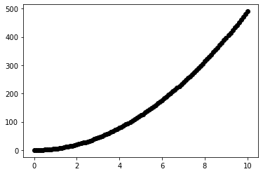
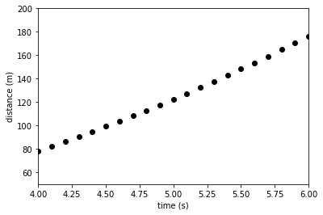
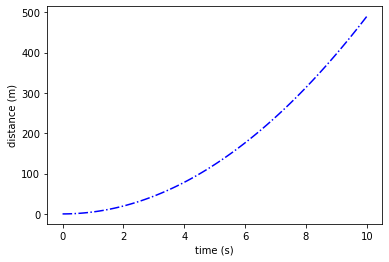
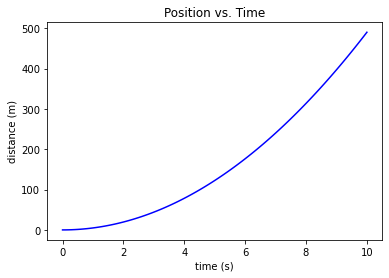

Plotting Arrays Using matplotlib#
For inline plotting, rather than new windows:#
%pylab inline
Populating the interactive namespace from numpy and matplotlib
import numpy as np
import matplotlib.pyplot as pl # import this for plotting routines
Refresher – acceleration with no initial velocity or displacement#
a = 9.8 # Acceleration m s^{-2}
count = 101 # Number of numbers
timeArray = np.linspace(0, 10, count) # Create an array of 101 values between 0 and 10 (inclusive)
distArray = 0.5 * a * timeArray**2 # Create an array of distances calculate from the time array
Q. What do these arrays (distArray and timeArray) contain?#
print(timeArray)
print("")
print(distArray)
[ 0. 0.1 0.2 0.3 0.4 0.5 0.6 0.7 0.8 0.9 1. 1.1 1.2 1.3
1.4 1.5 1.6 1.7 1.8 1.9 2. 2.1 2.2 2.3 2.4 2.5 2.6 2.7
2.8 2.9 3. 3.1 3.2 3.3 3.4 3.5 3.6 3.7 3.8 3.9 4. 4.1
4.2 4.3 4.4 4.5 4.6 4.7 4.8 4.9 5. 5.1 5.2 5.3 5.4 5.5
5.6 5.7 5.8 5.9 6. 6.1 6.2 6.3 6.4 6.5 6.6 6.7 6.8 6.9
7. 7.1 7.2 7.3 7.4 7.5 7.6 7.7 7.8 7.9 8. 8.1 8.2 8.3
8.4 8.5 8.6 8.7 8.8 8.9 9. 9.1 9.2 9.3 9.4 9.5 9.6 9.7
9.8 9.9 10. ]
[0.00000e+00 4.90000e-02 1.96000e-01 4.41000e-01 7.84000e-01 1.22500e+00
1.76400e+00 2.40100e+00 3.13600e+00 3.96900e+00 4.90000e+00 5.92900e+00
7.05600e+00 8.28100e+00 9.60400e+00 1.10250e+01 1.25440e+01 1.41610e+01
1.58760e+01 1.76890e+01 1.96000e+01 2.16090e+01 2.37160e+01 2.59210e+01
2.82240e+01 3.06250e+01 3.31240e+01 3.57210e+01 3.84160e+01 4.12090e+01
4.41000e+01 4.70890e+01 5.01760e+01 5.33610e+01 5.66440e+01 6.00250e+01
6.35040e+01 6.70810e+01 7.07560e+01 7.45290e+01 7.84000e+01 8.23690e+01
8.64360e+01 9.06010e+01 9.48640e+01 9.92250e+01 1.03684e+02 1.08241e+02
1.12896e+02 1.17649e+02 1.22500e+02 1.27449e+02 1.32496e+02 1.37641e+02
1.42884e+02 1.48225e+02 1.53664e+02 1.59201e+02 1.64836e+02 1.70569e+02
1.76400e+02 1.82329e+02 1.88356e+02 1.94481e+02 2.00704e+02 2.07025e+02
2.13444e+02 2.19961e+02 2.26576e+02 2.33289e+02 2.40100e+02 2.47009e+02
2.54016e+02 2.61121e+02 2.68324e+02 2.75625e+02 2.83024e+02 2.90521e+02
2.98116e+02 3.05809e+02 3.13600e+02 3.21489e+02 3.29476e+02 3.37561e+02
3.45744e+02 3.54025e+02 3.62404e+02 3.70881e+02 3.79456e+02 3.88129e+02
3.96900e+02 4.05769e+02 4.14736e+02 4.23801e+02 4.32964e+02 4.42225e+02
4.51584e+02 4.61041e+02 4.70596e+02 4.80249e+02 4.90000e+02]
To plot distArray vs. timeArray with a scatter plot:#
pl.scatter(timeArray, distArray, color = 'k')
pl.show()

To plot just a section to see the discrete nature (and add labels):#
pl.scatter(timeArray, distArray, color = 'k')
pl.xlim(4, 6)
pl.ylim(50, 200)
pl.xlabel('time (s)')
pl.ylabel('distance (m)')
pl.show()

To plot distArray vs. timeArray with a blue solid line:#
You can check out: https://matplotlib.org/stable/tutorials/colors/colors.html for more color choices.
pl.plot(timeArray, distArray, color='b', ls='-.')
pl.xlabel('time (s)') # xlabel is the abscissa
pl.ylabel('distance (m)') # ylabel is the ordinate
pl.show()

pl.plot(timeArray, distArray, color='b', ls='-')
pl.xlabel('time (s)')
pl.ylabel('distance (m)')
pl.title('Position vs. Time')
pl.savefig('position_v_time.pdf') # In the same cell as pl.plot
#pl.savefig('position_v_time.eps')
#pl.savefig('position_v_time.png')

Q. Where will these files be saved on our computer?#
More array methods#
Making copies of arrays#
yArray = np.linspace(0, 5, 6)
zArray = yArray[1:4]
print(yArray, zArray)
# Q. What will y and z contain?
[0. 1. 2. 3. 4. 5.] [1. 2. 3.]
yArray[3] = 10
Q. What does the next command yield?#
print(yArray, zArray)
[ 0. 1. 2. 10. 4. 5.] [ 1. 2. 10.]
yArray = np.linspace(0, 5, 6)
zArray = yArray.copy()
print(yArray, zArray)
[0. 1. 2. 3. 4. 5.] [0. 1. 2. 3. 4. 5.]
zArray = yArray.copy()[1:4]
print(yArray, zArray)
[0. 1. 2. 3. 4. 5.] [1. 2. 3.]
yArray[3] = 10
print(yArray, zArray)
[ 0. 1. 2. 10. 4. 5.] [1. 2. 3.]
Allocating Arrays#
xArray = np.array([1, 2, 3])
aArray = xArray.copy()
print(aArray)
[1 2 3]
aArray = np.zeros(xArray.shape, xArray.dtype)
print(aArray)
[0 0 0]
Q. What do I mean by the “shape” of the array?#
Q. And what is the data type (dtype)?#
aArray = np.zeros_like(xArray)
bArray = np.ones_like(xArray)
print(aArray, bArray)
[0 0 0] [1 1 1]
Generalized Indexing#
# remember, we already imported numpy (as np)!
xArray = np.linspace(1, 10, 10)
print(xArray)
[ 1. 2. 3. 4. 5. 6. 7. 8. 9. 10.]
# Note the double brackets indicating a subarray
xArray[[1, 5, 6]] = -1
print(xArray)
[ 1. -1. 3. 4. 5. -1. -1. 8. 9. 10.]
# Using range instead:
xArray = np.linspace(1, 10, 10)
print(xArray)
xArray[range(3, 10, 3)] = -1
print(xArray)
xArray[[3, 6, 9]] = -1
print(xArray)
[ 1. 2. 3. 4. 5. 6. 7. 8. 9. 10.]
[ 1. 2. 3. -1. 5. 6. -1. 8. 9. -1.]
[ 1. 2. 3. -1. 5. 6. -1. 8. 9. -1.]
Boolean Logic#
print(xArray)
[ 1. 2. 3. -1. 5. 6. -1. 8. 9. -1.]
myArray = xArray < 0
print(myArray)
[False False False True False False True False False True]
print(xArray[xArray < 0])
[-1. -1. -1.]
Let’s make a new array that has numbers ranging from -5 to 5.
xArray = np.arange(-5, 6)
print(xArray)
[-5 -4 -3 -2 -1 0 1 2 3 4 5]
xArray[xArray < 0] = xArray.max()
print(xArray)
[5 5 5 5 5 0 1 2 3 4 5]
Compound Conditionals & Arrays#
xArray = np.arange(-5, 5)
print(xArray)
[-5 -4 -3 -2 -1 0 1 2 3 4]
print(np.logical_and(xArray > 0, xArray == 3))
# Q. What should this yield?
# Hint: First, what is the value of a Boolean variable?
[False False False False False False False False True False]
# Reminder
print(xArray)
[-5 -4 -3 -2 -1 0 1 2 3 4]
print(np.logical_and(xArray > 0, xArray % 2 == 1))
# % is the modulus: x % 2 == 1 means the remainder of x/2 is 1
# Q. So, what should running this cell give us?
[False False False False False False True False True False]
print(xArray)
print(np.logical_or(xArray == xArray.min(), xArray == xArray.max()))
[-5 -4 -3 -2 -1 0 1 2 3 4]
[ True False False False False False False False False True]
print(np.logical_not(xArray == xArray.min()))
[False True True True True True True True True True]
print(np.any(xArray > 10), np.any(xArray < -2))
False True
print(xArray)
print(np.all(xArray > -10), np.all(xArray > -2)) #if all values are >-10; if all values >-2
[-5 -4 -3 -2 -1 0 1 2 3 4]
True False
print(xArray)
[-5 -4 -3 -2 -1 0 1 2 3 4]
print(np.where(xArray>2))
(array([8, 9]),)
vals_gtr_2 = np.where(xArray>2)
print(xArray[vals_gtr_2])
[3 4]
Let’s consider a list of elements, velocity, where values of -999. represent missing data. Missing data can be “masked” through a module numpy.ma (https://numpy.org/doc/stable/reference/maskedarray.generic.html)
Let’s say that we wanted to compute the average value of the data and the deviations from the average (anomalies -> .anom):
import numpy.ma as ma
velocity = [40.,50.,-9999.,70.,80.]
mvel = ma.masked_values(velocity, -9999.)
print(mvel.mean())
60.0
print(mvel - mvel.mean())
[-20.0 -10.0 -- 10.0 20.0]
print(mvel.anom())
[-20.0 -10.0 -- 10.0 20.0]